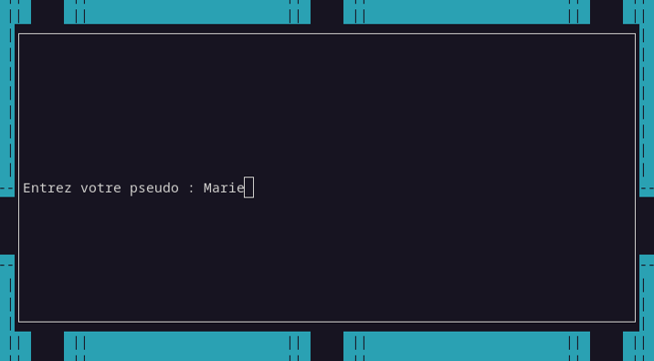
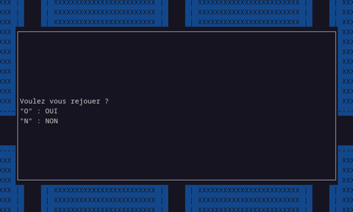

A la fin de chaque partie, il vous est demmandé d'entrer (ou de compléter pour les modes automatiques) votre pseudo. (Vous pouvez y mettre des espace si vous le souhaitez).
Une fois celui-ci entré, les trois meilleurs scores depuis l'installation du jeu (si il y en a) sont affichés.

De la même manière lorsque la touche "Q" est pressée durant une partie, les trois anciens meilleurs scores sont affichés.
Il faut savoir que ces scores sont enregistrés dans un fichier "scores.txt" dans le dossier jdp. Ainsi, si vous souhaitez réintialiser les scores il vous suffit d'ouvrir ce fichier et de supprimer l'ensemble de son contenu.
Ensuite, on vous propose de faire une nouvelle partie. Il faut appuyer sur la touche "O" du clavier pour rejouer ou la touche "N" pour fermer le jeu.
• Defi: Essayez de surpasser vos anciens scores, ceux des modes automatiques ou même ceux de vos amis !
Vous savez à présent accéder à vos trois meilleurs scores.
Pour comprendre les modes automatiques...
Etape 4
A quoi sert le mode automatique